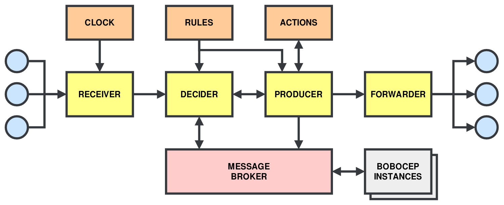

Getting Started¶
Complex Events¶
The primary goal of bobocep is to be able to infer the occurrence of complex events via patterns in data.
A simple example might be: a sharp rise in temperature sensor readings, followed by smoke detection, within 1 minute
of each other, could infer the occurrence of a fire in a physical environment.
When this happens, we notify an external system to start the fire alarms in the building.
Here, we define:
A pattern that uses data and time correlations to infer the existence of a fire. The data can be considered primitive events that, when correlated using the pattern, form a composite event. A composite event can then be returned into the system for use in the pattern of another future composite event.
A name for the composite event: “fire”.
Actions to take when the composite event is generated: starting the fire alarms.
The BoboComplexEvent class is used to define complex events.
It requires a name, a BoboPattern instance for the pattern to detect, and a BoboAction
instance to execute on composite event generation.
Data entering the system is encapsulated within PrimitiveEvent instances, CompositeEvent instances
are generated on complex event detection, and ActionEvent instances for when the complex event’s action has
been completed, all of which are subclasses of the BoboEvent type.
Architecture¶

The bobocep architecture.¶
The four core subsystems of the architecture are as follows:
Receiver. The entry point for data into the system. Its purpose is to validate incoming data and then format it into a primitive event using the
PrimitiveEventclass type. An instance of this type contains the incoming data, a unique identifier for the event, and a timestamp of when the event was created.Clock. An internal clock generates timestamps for incoming events, which is the epoch time with nanosecond precision.
Decider. Generates a handler for each complex event.
BoboEventinstances are consumed by this system and used to infer the existence of complex events. If a complex event has been detected, it will notify Producer.Rules. Complex event definitions are passed to Decider, which are translated into nondeterministic finite automata (NFA). Instances of these automata, called runs, are created at runtime to reason on events and identify complex events.
Producer. Receives notifications from Decider on the generation of new complex events, which are represented by
CompositeEventinstances. It executesBoboActioninstances, or Actions, subscribed to complex events and can recursively sent back to Decider to be used to detect other complex events. The Producer is able to block complex events, which will prevent their subscribedBoboActioninstances from being executed, and will prevent them from being passed to Forwarder.Forwarder. Forwards
CompositeEventinstances to subscribers of Forwarder. This enables external systems to consume complex events generated bybobocep.
Note
CompositeEvent instances are independent of the BoboAction instances subscribed to them.
Therefore, the Producer might pass CompositeEvent instances back to Decider before the any
subscribed actions have finished executing.
These subsystems are inspired by the information flow processing (IFP) architecture proposed by
Cugola et al. [Cugola2012].
This architecture is extended by enabling state updates to be synchronised across multiple instances
of bobocep.
Namely, Decider’s internal data buffers, which are inspired by the designs of Agrawal et al. [Agrawal2008],
and the actions executed by Producer.
This is accomplished using an external message broker to exchange updates in the state of partially-completed
complex events.
Quick Setup¶
For a quick setup, we will create a BoboSetup instance.
from bobocep.setup.bobo_setup import BoboSetup
setup = BoboSetup()
Mandatory¶
Complex Event Definitions¶
It is essential that the BoboSetup contains at least one complex event definition.
We will define a simple pattern below, as follows.
from bobocep.rules.nfas.patterns.bobo_pattern import BoboPattern
from bobocep.rules.predicates.windows.sliding.window_sliding_first import WindowSlidingFirst
pattern_abc = BoboPattern() \
.followed_by(label="data_a", predicate=lambda e, h, r: e.data == 'a') \
.followed_by(label="data_b", predicate=lambda e, h, r: e.data == 'b') \
.followed_by(label="data_c", predicate=lambda e, h, r: e.data == 'c') \
.precondition(WindowSlidingFirst(interval_sec=10))
This pattern states that we need three events, where the data for the three events are 'a', 'b',
and 'c', in that order.
All of these events must occur within 10 seconds.
Now, we add this pattern to our BoboSetup instance with the name 'abc', and no action to be taken if
it occurs.
from bobocep.setup.bobo_complex_event import BoboComplexEvent
from bobocep.rules.actions.no_action import NoAction
setup.add_complex_event(event_def=BoboComplexEvent(
name='abc',
pattern=pattern_abc,
action=NoAction()))
Optional¶
Receiver¶
We might want to configure the Receiver by stating how incoming data should be validated.
This ensures consistency with PrimitiveEvent data.
For example, we might want to ensure that all data are of type str and are at least 5
characters in length, as follows.
from bobocep.receiver.validators.str_validator import StrValidator
setup.config_receiver(StrValidator(min_length=5))
By default, all data will be accepted.
Producer¶
We might want to perform an action on Producer that has the ability to block a complex event from
having its actions executed and being passed to Forwarder.
That is, if the Producer’s action returns False, the CompositeEvent in question will be
dropped.
For example, it might be desirable to rate limit CompositeEvent instances.
If a CompositeEvent with name “A” is being generated every 3 seconds, but you only want at most
1 of these events every 1 minute, we can do the following.
from bobocep.rules.actions.rate_limit_action import RateLimitAction
setup.config_producer(RateLimitAction({'A': 60}))
By default, no action is performed and all CompositeEvent instances are accepted.
Forwarder¶
The Forwarder is where you will send your CompositeEvent instances beyond bobocep.
You will need to create your own BoboAction instance that will perform the tasks you require.
For example, a BoboAction that writes the events to file, or sends them to an external system.
setup.config_forwarder(write_to_file_action)
By default, Forwarder does nothing except send its events to its subscribers.
Distributed¶
To connect to an external message broker and enable distributed complex event processing, you need to provide the exchange name, host name, and user name associated with the message broker, as follows.
setup.config_distributed(
exchange_name="my_exchange",
user_name="my_user",
host_name="192.168.1.123")
By default, bobocep is not distributed.
Null Data¶
It might be desirable to inject periodic data into the Receiver to ensure a continuous stream of events.
For example, if we want to inject an empty string "" into the system every 3 seconds,
we do the following.
setup.config_null_data(delay_sec=3, null_data="")
By default, null data is not generated.
Run¶
Once we are happy with our configuration, we run the BoboSetup as follows.
setup.run()
A RuntimeError exception will be raised if there are any problems with the configuration.
Next Steps¶
Now that we have set up a simple example, the next steps are to:
Why “Bobo”?¶
Bobo is the name of Mr Burns’ childhood teddy bear that features in the episode
“Rosebud” of The Simpsons.
In the episode, Bobo goes on a long, perilous journey and, against all odds, manages to survive the adversity it faced.
bobocep is designed to be distributed across the network edge and, thus, be resilient to adverse hardware and
software failures that affect its ability to provide service.
Therefore, I felt the name was very fitting.
References¶
- Agrawal2008
Agrawal, J., Diao, Y., Gyllstrom, D., & Immerman, N. (2008). Efficient pattern matching over event streams. ACM SIGMOD international conference on Management of data, pp. 147-160.
- Cugola2012
Cugola, G., & Margara, A. (2012). Processing flows of information: From data stream to complex event processing. ACM Computing Surveys (CSUR), 44(3), 15.